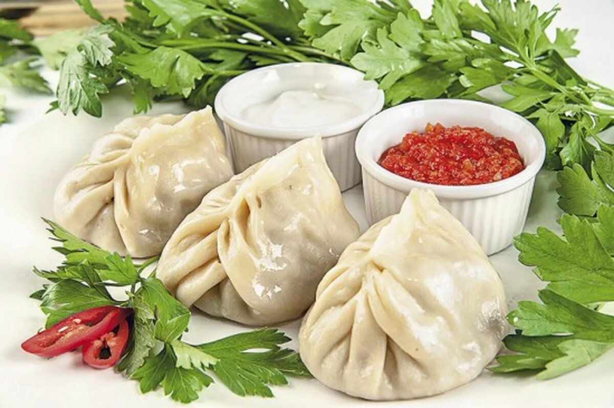

Сок манго
У сока манго яркий запоминающийся вкус – одним он напоминает персик с привкусом дыни, другим смесь абрикоса и ананаса, кому-то чудится клубника. Манговый сок очень полезен, ведь в плод манго содержит белки, углеводы, клетчатку, витамины А и В, большое количество бетакаротина, органические кислоты, калий, кальций, магний, цинк. По содержанию витамина С манговый сок близок к черносливу и бруснике, а витамина А в нём больше, чем в апельсине.

Kруассан
Круасса́н (фр. croissant «полумесяц») — небольшая булочка из слоеного теста в форме полумесяца. Выпечку готовят в несколько этапов. Сначала объединяют все необходимые ингредиенты до получения однородной массы, затем в нее вмешивают масло или маргарин, придают изделиям форму полумесяца. После этого расстаивают и выпекают. Жирность сливочного масла, которое используется для теста, должна превышать 80%.
Манты
Манты — традиционное блюдо народов Турции, Монголии, Кореи, Татарстана, Киргизии, Казахстана и Китая. Манты — это начинка, обернутая тонким тестом с узорным защипом сверху. По своему виду манты схожи с традиционным русским блюдом — пельменями, только первые больше по размеру. Тесто для приготовления мантов обычно пресное. Традиционные, классические манты готовятся из говядины.